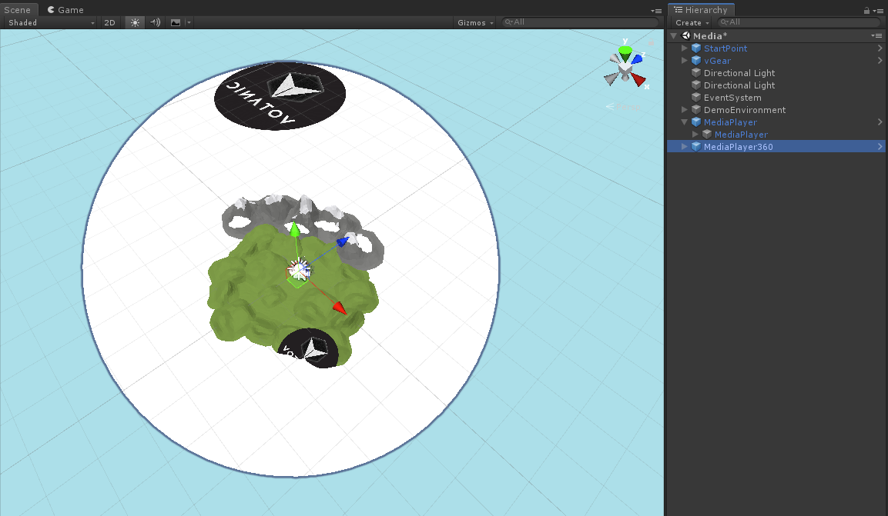
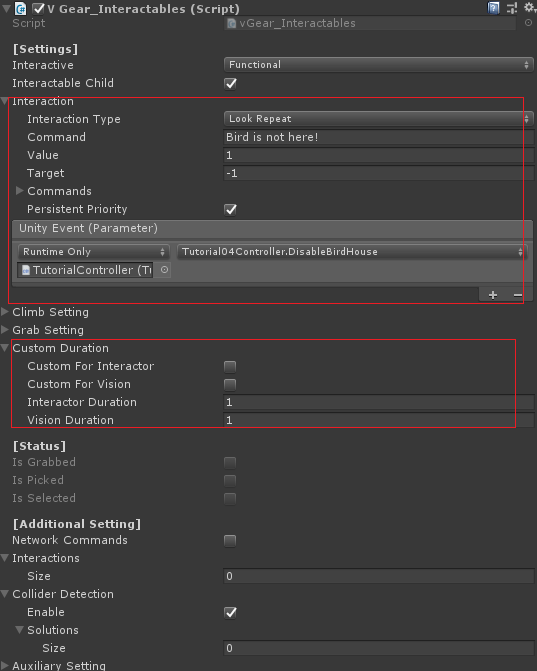
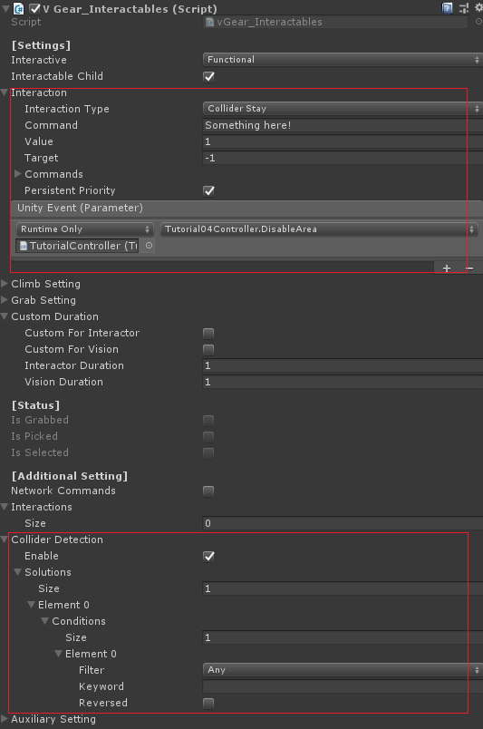

Interact with Virtual World
In this article
Objective
This chapter introduces the interaction features provided by VotanicXR.
An interaction consists of an interactor and interactable, this chapter will introduces how to set up the interactables and the main interactor Wand, and simple introduce other interaction method.
Interaction in VotanicXR
The definition about interactiob in VotanicXR is defined below.
interactable is defined as a gameObject with V Gear_Interactable (Script) component, that can be interacted by the interactors with interaction method provided.
interactor is defined as the gameObject with components that can interact the Interactables.
Interaction is defined as the reciprocal action between an interactor and interactable, the acted interaction can sends a command or invokes Unity Events.
Basic interaction includes Trigger, Select, Grab, Pick, Climb.
Detail will be introduces below.
Set up Interaction Sample Scene
Go to Assets > Votanic > VotanicXR_Tutorial > Tutorial04 and open the scene Interaction provided.
GameObject TutorialController with script component Tutorial04Controller and GameObject list of props Interactable gameObjects is provided for the tutorial usage.
Set up Interactable
Add Interactable Component
Right Click the Rock in the given gameObject Interactable gameObejects and select vGear > Component > Interactables+ to add the V Gear_Interactables (Script) component .
Note that the component required a collider, and check the Convex option of the gameobject if using Mesh Collider. And add a rigidbody component for the gameObject to apply physics.

Configure Interactable
The interaction and condition can be set in the Interaction of [Settings], with the interaction type and response type. The response can be sending a Command or invoking a Unity Event.
The sample with printing AllReceived() and invoke Unity Event is shown below.
Go to the
[Settings] > Interactionin componentV Gear_Interactables (Script).Input the
Commandfield, the command will be sent to the command handler when the interaction type is fulfilled.Add an Unity Event in
Unity Event, drag theTutorialControllergameObject into the Object field, and selectTutorial04Controller > PrintHello (). The Unity Event will be invoked when the interaction type is fulfilled.

Set up Multiple Interaction
To perform more interactions in one gameobject, you may set more interactions in Interactions in [Additional Setting]. The sample below print out the commands received in the Update function.
Go to the
[Additional Settings] > Interactionsin componentV Gear_Interactables (Script).Adding the size of the
Interactions, we input 2 in the sample.Add more event or commnad at the added interactions and change the interaction type for tests.
Using Wand Interactions
The Wand is basic interaction tool to of the vGear, and is the default tool of the vGear User.
By default, the wand is a two meters ray beam with ray point. When the wand collides with a collider, the ray beam will becomes shorter to show the collision.
The color of the wand changed to green when it collides with interactable gameObjects, and changed to red when it is interacting. The wand setting can be edited through Unity Inspector and API, and is described in Detail of vGear Components.
This paragraph will introduces some of the basic interaction types of Wand.
Select
Select is the action from user to the interactable gameObjects.
Point the gameObject by using the wand, the color of the wand is changed from white to green, the Selection is performed.
On Select is a kind of the interaction type, the relevant types are Select Stay and Deseelct.

Trigger
Trigger is the interaction from user to the interactable gameObjects.
By triggering an interactable gameObject, the V Gear_Interactables (Script) component will give response.
To simply trigger a interactable gameObject, point the gameObject by using the wand and press Trigger button, the wand color will be changed from green to red.
The relevent interaction types are Down, Up, Press and Hold, and the types with action Grab and Pick will be introduced below.
Grab
Grabbing an object and grab to interact with other objects is useful.
Grabbing an object requires continuously receiving Grab commands, when the commands stop sending, the object will be drop down.
The following setting performs grabbing.
Right Click the
Chairin the given gameObjectInteractable gameObejectsand add theV Gear_Interactables (Script)component .Set Interaction Type into
Pressand Command intoGrabin vGear Interactables.Note that Some controller keys is mapped with this, you may bind it in configurator if you need. By default Grip button is mapped to Grab for Vive Controller, and it is no need to set the command into
Grab. The detail will be introduced in Configurator.Check the Grabbable option in the Grab Setting of [Setting].
The result of grabbing is shown below.

Pick
Pick is carrying an Item and can be placed.
Pick and Grab are capable for a gameobject, and Pick only requires receive one Pick command, and release by receive one Grab command.
The following setting performs grabbing.
Right Click the
Vasein the given gameObjectInteractable gameObejectsand add theV Gear_Interactables (Script)component.Set Interaction Type into
Upand Command intoPickin vGear Interactables.Check the Grabbable and Pickable option in the Grab Setting of [Setting].
The result of grabbing is shown below.
Detail of Interactable will be described in Detail of vGear Interactable.
Climb
Climb is an interaction to pull the user when user climbing.
Developer can implements games such as zipline and rock climbing. The sample is shown below.
The sample using a flying shield as zipline is shown below.
Right Click the
Flying Shieldin the given gameObjectInteractable gameObejectsand add theV Gear_Interactables (Script)component. The gameObject is provided with flying animation.Set Interaction Type into
Pressand Command intoGrabin vGear Interactables if the controller is not mapped.Check the
Climb Objectinto true and corresponding x, y, z to be fixed in the[Settings] > [Climb Setting], here we fix x, y and z for the zipline implementation.When the player is grabbing the moving zipline, player will be moved with the zipline.

Advance Interaction
Except for using Wand as interactor, there are other Interaction Types which using Vision and Collider.
Using Vision Interaction
Vision can be triggered when the user transform facing the interactable.
The relevant interaction types are Look, Look Repeat, Look Stay and Look Exit.
The sample using Vision Interaction to check the user look at the bird house is shown below.
Right Click the
Bird Housein the given gameObjectInteractable gameObejectsand add theV Gear_Interactables (Script)component.Input the command field, and add an Unity Event to change the material as responce.
Drag the
TutorialControllergameObject into the Object field, and selectTutorial04Controller > ChangeBirdHoseMaterail ().Change the interaction type to
Look Repeat.The duration value of the
HoldandLook Repeatcan be modified in[Settings] > Custom Duration.

The result of the vision interaction is shown below.

Using Collider Interaction
Collider Interaction can be triggered when the interactor collider collides with interactable collider.
The relevant interaction types are Collider Enter, Collider Stay and Collider Exit.
The sample using Collider Interaction to check any gameObject within an area is shown below.
Right Click the
Areain the given gameObjectInteractable gameObejectsand add theV Gear_Interactables (Script)component.Input the command field, and add an Unity Event to change the material as responce.
Drag the
TutorialControllergameObject into the Object field, and selectTutorial04Controller > ChangeAreaHoseMaterail ().Change the interaction type to
Collider Stay.Go to
[Additional Settings] > Collider Detectionand add the value to 1 inSoulutions > SizeandElement 0 > ConditionsCheck the
Is TriggerOption at the collider component to prevent the collision.

The result of the vision interaction is shown below.